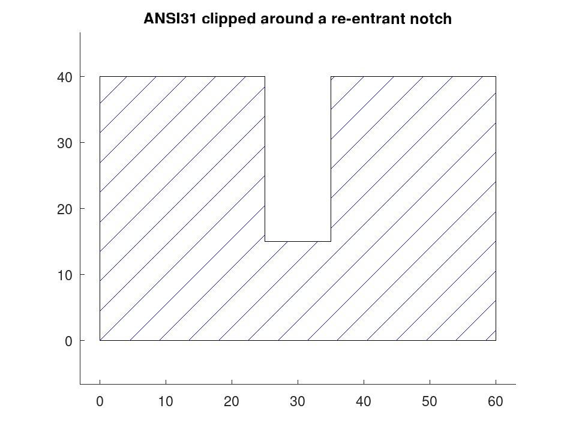
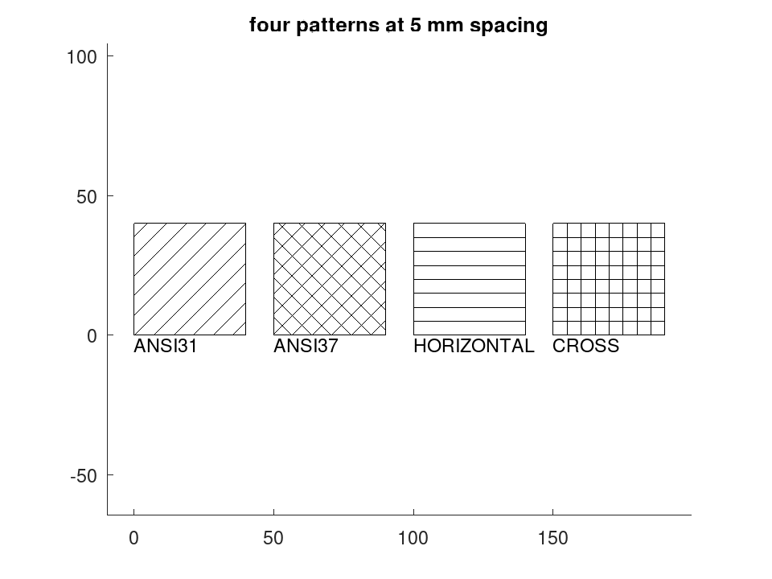

geom.hatchlines
drafting: S = geom.hatchlines (P)
drafting: S = geom.hatchlines (P, PATTERN)
drafting: S = geom.hatchlines (P, PATTERN, ANGLE, SPACING)
drafting: NAMES = geom.hatchlines ()
The line segments that fill a boundary with a hatch pattern.
S = geom.hatchlines (P) returns the segments that hatch
the polygon P with the default pattern, as an -by-4 matrix
whose rows are [x1, y1, x2, y2].
S = geom.hatchlines (P, PATTERN, ANGLE,
SPACING) chooses the pattern, rotates it by ANGLE degrees and
sets the perpendicular distance between lines to SPACING millimetres.
ANGLE defaults to zero and SPACING to the pattern’s own.
NAMES = geom.hatchlines () lists the patterns defined.
A hatch is a set of lines. Formats that have no hatch entity of their own — and the DXF revision this package writes is one — can still carry the hatch if the lines are generated explicitly, and a figure can draw it the same way. Producing them once, here, is what lets every backend show the same fill rather than each inventing its own or dropping it.
| Name | Spacing | |
|---|---|---|
'ANSI31' | 3.175 | 45 degrees; the general-purpose section hatch, and what an unqualified hatch means |
'ANSI32' | 6.35 | 45 degrees, widely spaced; steel |
'ANSI37' | 3.175 | crosshatch at 45 and 135 degrees |
'HORIZONTAL' | 3.175 | lines along the x axis |
'VERTICAL' | 3.175 | lines along the y axis |
'CROSS' | 3.175 | square grid |
Source Code: geom.hatchlines
The boundary is rotated so the hatch runs horizontally, scanned at the requested spacing, and each scan line is cut against the polygon edges by the even-odd rule before the pieces are rotated back. A boundary that is concave or re-entrant is therefore filled correctly, in as many pieces as it takes.
An edge is counted when the scan line crosses its lower vertex but not its upper one, so a scan passing exactly through a vertex produces one crossing rather than none or two. Without that rule a hatch develops occasional stray lines running out of the shape, and only at particular spacings.
Self-intersecting boundaries are not rejected, but the even-odd rule then
fills them the way it fills any such figure, leaving the crossed regions
bare. Check with geom.selfintersects if that matters.
See also: draw.Drawing, draw.Drawing.entities, draw.Drawing.plot, geom.selfintersects
Source Code: geom.hatchlines
A hatch is a set of lines, and generating them explicitly is what lets a format with no hatch entity of its own still carry the fill. The boundary is clipped by the even-odd rule, so a concave outline fills in as many pieces as it takes.
P = [0, 0; 60, 0; 60, 40; 35, 40; 35, 15; 25, 15; 25, 40; 0, 40];
S = geom.hatchlines (P, 'ANSI31');
printf ('%d segments fill the outline\n', rows (S));
28 segments fill the outline
D = draw.Drawing ().polyline (P, true);
D.Colour = 'blue';
for k = 1:rows (S)
D = D.line (S(k,1:2), S(k,3:4));
endfor
plot (D);
title ('ANSI31 clipped around a re-entrant notch');

The patterns, and the angle and spacing that override them.
geom.hatchlines ()
ans =
{
[1,1] = ANSI31
[1,2] = ANSI32
[1,3] = ANSI37
[1,4] = HORIZONTAL
[1,5] = VERTICAL
[1,6] = CROSS
}
P = [0, 0; 40, 0; 40, 40; 0, 40];
D = draw.Drawing ();
x = 0;
for nm = {'ANSI31', 'ANSI37', 'HORIZONTAL', 'CROSS'}
Q = P + [x, 0];
D = D.polyline (Q, true);
S = geom.hatchlines (Q, nm{1}, 0, 5);
for k = 1:rows (S)
D = D.line (S(k,1:2), S(k,3:4));
endfor
D = D.text ([x, -6], nm{1}, 3);
x += 50;
endfor
plot (D);
title ('four patterns at 5 mm spacing');
